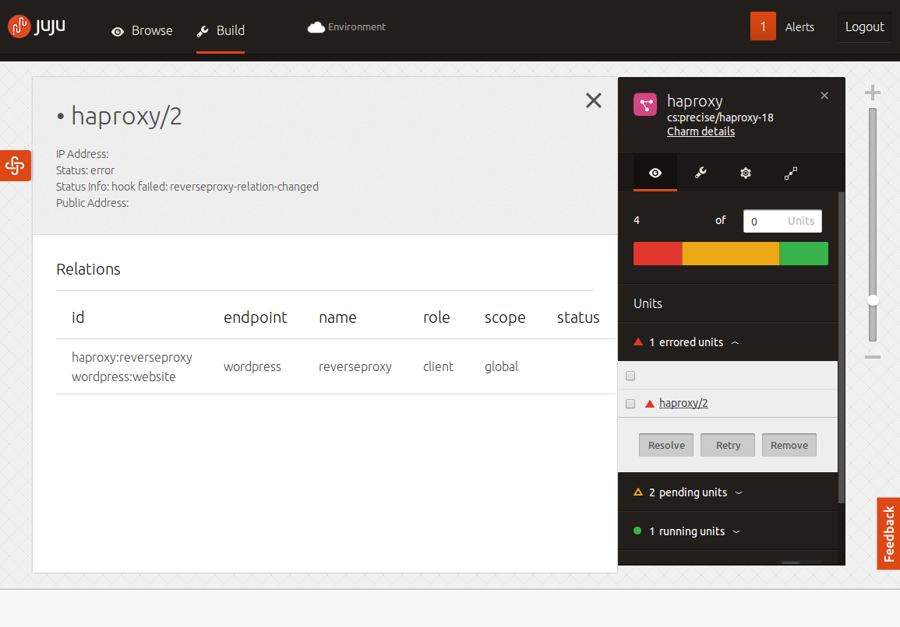

What is the GUI?
Juju has a graphical user interface (GUI) available to help with the tasks of managing and monitoring your Juju environment. The GUI is a JavaScript and HTML web application that is encapsulated in its own charm, which can be installed to its own service or alongside another service. Once installed, the GUI will talk with Juju over a websocket to provide a real-time interface with the services installed, the units that comprise them, and the machines available. Additionally, the GUI can talk with the charm store in order to search, browse, and deploy charms to your environment.
Installation
Installing the GUI works the same as installing any other charm:
juju deploy juju-gui
juju expose juju-gui
Once the service is deployed and exposed, you can find the address for the GUI by running juju status and looking for the public-address field for the juju-gui service.
In more recent versions of Juju, you can also deploy the GUI along-side another service on an existing machine. This might be the case if you wish to conserve resources. The following command will deploy juju-gui to an existing machine 1:
juju deploy --to 1 juju-gui
juju expose juju-gui
Check juju help deploy to find out more about this option, and whether or not
it is available in your version.
Note: If you are deploying behind a firewall, make sure to check out the charm's README for more information on getting the GUI up and running and talking to your environment
Configuration
There are a few pertinent configuration options that might help you when working with the GUI. You can read about all of them on the GUI's charm page, but there is one that is worth discussing immediately:
read-only
This option will cause the GUI to display services, units, and machines, along with all of their meta-data, in a read-only mode, meaning that you will not be able to make changes to the environment through the GUI. This is good for a monitoring type scenario.
Note: read-only mode in the GUI simply prevents actions taken within the GUI from being sent to the Juju environment, and is not additional security against the Juju API.
Using the GUI
The GUI has a few different uses. You can use it to monitor the status of your environment, and you can use it to interact with your environment.
Monitoring
One of the primary uses for the GUI, particularly in read-only mode, is that of monitoring. The GUI provides not only an overview of the health of your environment and the services comprising it, but also details of the units and machines comprising those services.

The blocks representing services contain a health indicator showing the percentage of running units, pending units, and units in an error state. By viewing the service, you can also see a more in-depth list of units and their states, as well as further information about them such as their public address, relations, and other details.

The GUI can be used to offer insight into not only the status of your cloud deployment, but also the overall structure of your services and how they are related, adding to the ability to visualize the way in which all of the components of your project work together.
Building
Another use for the GUI is building and managing an environment in an intuitive and graphical interface. The GUI gives you access to all of the charms in the Charm Store, allowing you to deploy hundreds of different services to your environment, or even to a sandbox environment, which you can then export to use later.
On the left side of the GUI, all of the charms in the charm store are visible. Clicking on these will provide all of the details about the charm, including information about whether or not it's recommended, the number of times it has been deployed and contributed to, and so on. From here, you can add the charm to your environment (or simply drag it onto the canvas from the side-bar), which will give you the option to configure and deploy a new service.

Once deployed, clicking on the service will allow you to not only view the units and machines comprising it, but also to scale the service out or back, change constraints on new units, re-configure the service, resolve or retry units in an error state and more.
Relations can be added between services - even in the case of ambiguous relationships, such as a master or slave database - by clicking the 'add relation' menu item on one service, and then clicking on the destination service.

The GUI will attempt to position services automatically so that they do not overlap. However, you may drag the services around the canvas so that they're positioned in a way that makes sense to you. These positions are stored in your Juju environment, so the next time you open the GUI, things will be as you left them.
For an example of this, check out this demonstration of building an OpenStack instance in Juju using the GUI: